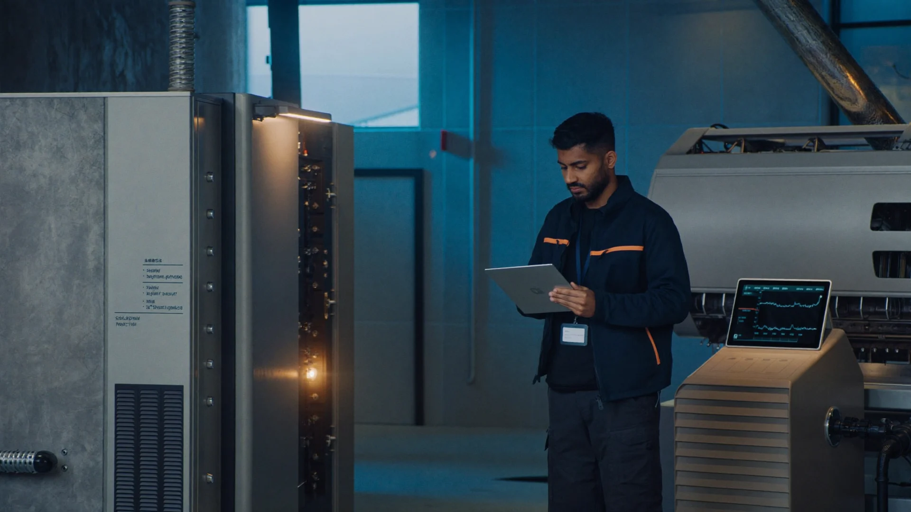
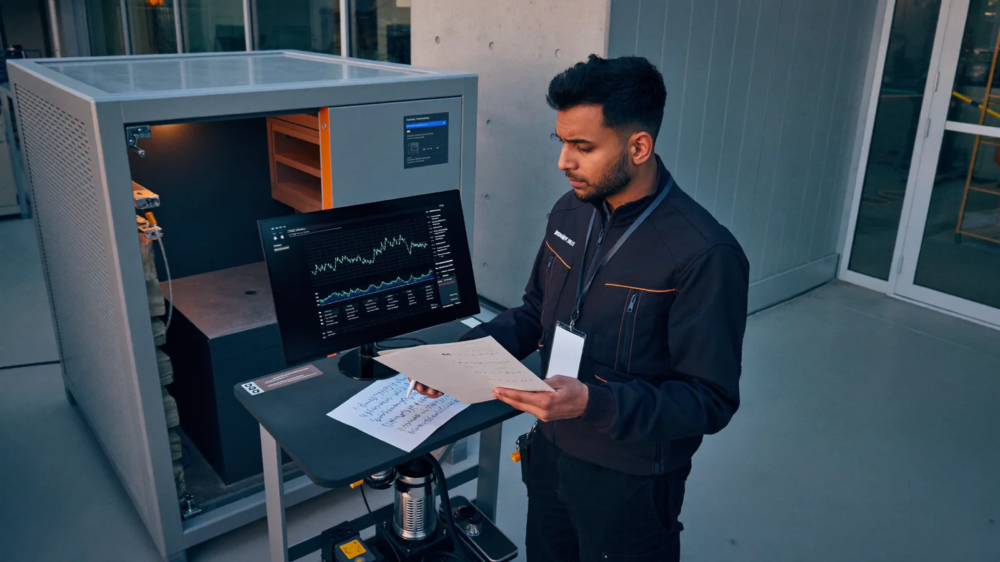
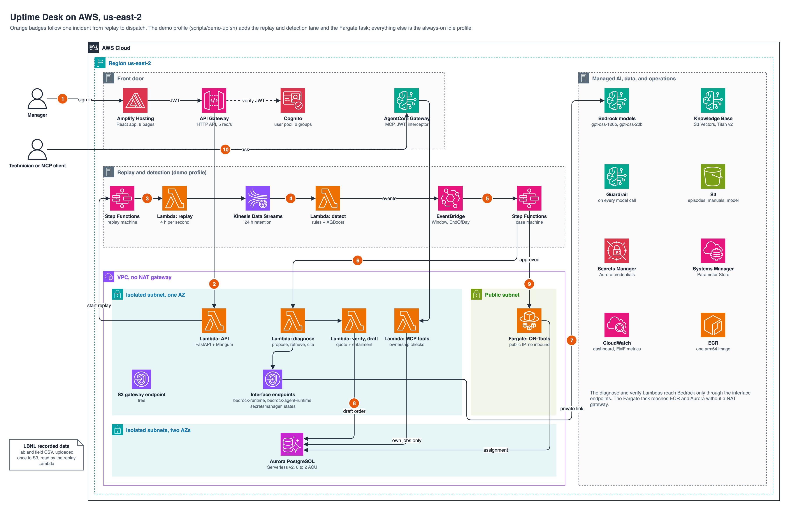

01
Replay and compare
The manager starts a recorded LBNL fault day. Deterministic HVAC rules remain the primary detector. XGBoost supplies a second opinion, and disagreement goes to review instead of becoming an automatic conclusion.

Uptime Desk helps an HVAC service manager turn a recorded sensor fault into a cited work order, a human decision, and a qualified dispatch.
At 5:40 a.m., a facilities service manager stands beside an air handler while the building is still quiet. A supply-air trend has started to drift, but the alarm does not name the failed part or the safe service steps.
The manager checks a trend on one screen, searches a manual on another, and compares the call with a dispatch sheet. The maintenance window keeps shrinking while each source tells only part of the story. A technician can move only after the manager can explain the fault, support the work with the right manual passage, and confirm that the assigned person has the required access and certification.
This scenario is illustrative. The evaluation uses recorded public LBNL data, not a live customer building.

The walkthrough alternates real captured application footage with the decision the manager makes at each stage.
The manager starts a recorded LBNL fault day. Deterministic HVAC rules remain the primary detector. XGBoost supplies a second opinion, and disagreement goes to review instead of becoming an automatic conclusion.
Bedrock retrieves manual pages and proposes a fault with quoted evidence. A second model checks whether each quotation supports its claim. A literal page check confirms the source, and PostgreSQL rejects any unverified work-order step.
Step Functions waits on the draft. The manager can approve it, remove an optional step, or reject it with a reason. OR-Tools then evaluates certification, shift, site access, travel, and SLA constraints.
The technician assistant can read that technician's jobs and verified manual passages. The MCP gateway replaces caller-supplied identity with verified claims. A request for another technician's work is denied and audited.
Model against 0.739 rules.
Rules beat the 0.958 model.
Rules beat the 0.187 model.
Diagnosis against a 0.122 keyword baseline.
OR-Tools against 1,343 nearest qualified. Earliest available also reached 402.
Two cases stopped because no sourced lockout step existed.
Lab, field, and scenario results stay separate. The dispatch numbers describe a scenario model across 37 jobs. They do not claim avoided downtime, saved visits, or dollar savings. Sources: Gate 1, Gate 2, Gate 3, and Gate 5.
The human decision separates a draft from dispatched work. Each edge draws as the diagram enters the viewport.
flowchart LR
A[Recorded rows] --> B[Replay]
B --> C[Rules and XGBoost]
C --> D[Open case]
D --> E[Retrieve manuals]
E --> F[Propose diagnosis]
F --> G[Verify quotations]
G --> H[Store verified draft]
H --> I{Manager decision}
I -->|Approve| J[Optimize dispatch]
I -->|Edit| H
I -->|Reject| K[Close with reason]
J --> L[Technician assistant]
classDef human fill:#f26a21,stroke:#b7470b,color:#fff;
class I human;
Each replay retains source rows, detector outputs, citations, the manager action, dispatch rationale, assistant calls, and denied requests. Gate scripts score those artifacts against ground truth and policy tests.
Release 1 does not retrain from production outcomes. A future release can use reviewed errors to improve retrieval, routing, and a new frozen gate run.
flowchart LR
A[Recorded episode] --> B[Run pipeline]
B --> C[Capture artifacts]
C --> D[Score fixed gates]
D --> E[Review errors]
E --> F[Change retrieval or routing]
F --> G[Freeze next version]
G --> B
The deployment separates its always-on foundation from the temporary replay and dispatch profile. The permanent public demo serves a captured live run and never calls the removed backend.

API Gateway and Cognito protect manager and technician paths. Kinesis carries replayed rows. Lambda handles replay, detection, diagnosis, verification, and MCP checks. Step Functions keeps case state and waits for approval. Bedrock supplies diagnosis and entailment. Aurora stores cases, work orders, assignments, citations, and audit events. OR-Tools runs in ECS Fargate.
Release 1 uses 123 public LBNL episodes: 119 lab episodes and 4 field files from 2 Connecticut sites. Another 27 simulated files remain held for Release 2. The manuals match equipment classes rather than exact units, so every diagnosis carries a compatibility warning.
Rules remain the primary detector. Local XGBoost provides a second opinion. Bedrock runs openai.gpt-oss-120b-1:0 for diagnosis and openai.gpt-oss-20b-1:0 for entailment. Titan Text Embeddings v2 and S3 Vectors support retrieval. AgentCore Gateway fronts the MCP handlers.
The gateway discards caller-supplied identity. A literal page check and entailment check protect citations. A database constraint blocks unverified work-order steps. The case machine blocks approval without a sourced lockout or disconnect step. Denied requests enter the audit log and emit a metric.
| Gate | Test | Measured result | Boundary or weak result |
|---|---|---|---|
| 1 | Detection against published labels | Model recall 0.957 on lab AHU | Rules won on lab economizer and field RTU. False alarms reached 0.5 to 1.9 events per unfaulted operating day. |
| 2 | 92 diagnosis cases | Citation support 0.880 against 0.122 | The model identified 0 of 11 building-operations cases. The model lead over the rule hint was not statistically significant. |
| 3 | 37 dispatch scenario jobs | 402 minutes total lateness, 0 constraint violations | Earliest available tied lateness. Nearest qualified had lower travel. |
| 4 | Technician assistant | 27 of 30 questions, 12 of 12 adversarial tests | Mixed questions passed only 1 of 3 because a job lookup could be skipped. |
| 5 | Hosted workflow | 8 of 10 runs passed | The 2 other runs stopped safely because no sourced lockout step existed. |
Replay to work-order draft took a median 39.4 seconds. Replay to dispatch took a median 77.3 seconds. Diagnosis and entailment averaged $0.00206 in model cost per incident. Infrastructure cost per incident was not isolated.
The assistant measured p50 latency of 4.12 seconds, p95 latency of 9.05 seconds, and model cost of $0.00097 per question.
AWS CDK defines the foundation and demo profiles in TypeScript. The VPC has no NAT gateway. Four interface endpoints and one S3 gateway endpoint carry private service traffic. The permanent Vercel demo builds from GitHub main.
diagrams/build_diagrams.py
diagrams/aws-architecture.drawio
diagrams/aws-architecture.svg
The generator also exports system context, network, identity,
case state, replay, retrieval, MCP, fault policy, data model,
deployment, and observability diagrams.uv sync
docker run --name uptime-pg -e POSTGRES_PASSWORD=localtest \
-e POSTGRES_DB=uptime -p 54329:5432 -d postgres:16
.venv/bin/python -m pytest -q tests
cd app
npm ci
npm run lint
npm run build
cd ../infra
npm ci
npm run build
npx cdk synth --profile awsnew
npx cdk diff --profile awsnewThe manager returns to the same air handler with source rows, verified manual passages, approval, dispatch rationale, and audit events in one trail. Another operator can inspect the recorded incident from alarm to assignment.